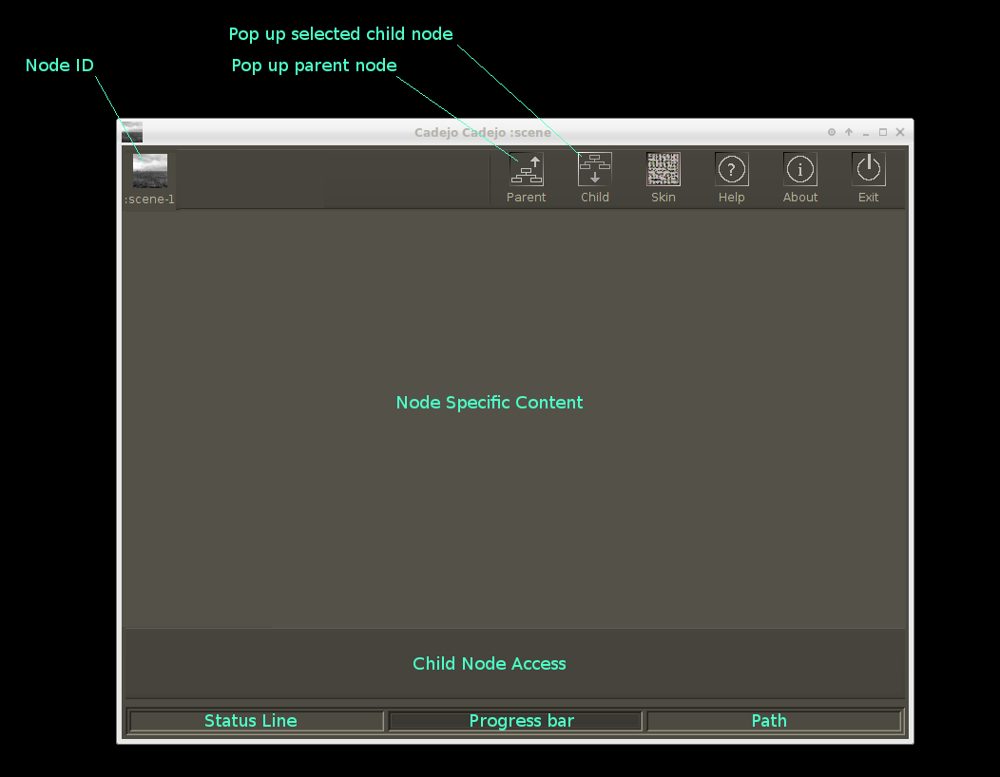

Most of the frames used throughout Cadejo share the same general layout. 
Not all frames will have a "child access" area on the bottom. For these cases use the "child" button on the top to access a child node.
The "path" line shows where this node is located on the Cadejo process tree. Each node is separated by a forward slash from this node up to the root node.